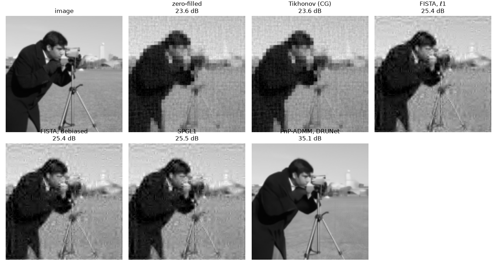

Note
Go to the end to download the full example code.
Beyond CT: sparse recovery and other operators¶
Nothing in LION’s algorithms is specific to CT: they take an Operator
(forward, adjoint, shapes), and CT’s is one of them. This tutorial uses
another, from photocurrent mapping (PCM; Koutsourakis, Thompson and
Blakesley, 2021), a single-pixel imaging technique: an image is measured
through a subset of its Walsh-Hadamard coefficients. Recovering it from a
quarter of them is a compressed-sensing problem, and LION has the classical
tools for it, for any operator:
wavelets (
Wavelet2D) and the composite operator measurement ∘ inverse wavelet (CompositeOp), to look for an image sparse in wavelets;FISTA and SPGL1, for ℓ1-regularised problems, and a debiasing step;
conjugate gradient, for least-squares problems;
and the learned ones: here, Plug-and-Play with a trained denoiser.
Previous: Extending LION.
Needs no data and no GPU (an image from scikit-image stands in for a current
map), and internet the first time, for the denoiser’s weights. LION’s
scripts/example_scripts/photocurrent_mapping.py (by Thanh Trung Vu) does
the same on a measured current map of a solar cell.
The operator¶
A 128×128 image (2^J × 2^J, J = 7), and a Subsampler that chooses which
Walsh-Hadamard coefficients are measured: a quarter of them, all those of
the coarsest scales and the rest at random.
import matplotlib.pyplot as plt
import numpy as np
import torch
from skimage.data import camera
from skimage.transform import resize
from LION.metrics.psnr import PSNR
from LION.operators.pcm import PhotocurrentMapOp, Subsampler
from LION.utils.device import default_device
device = default_device()
J = 7
N = 2**J
image = torch.tensor(resize(camera(), (N, N)), dtype=torch.float32, device=device)
subsampler = Subsampler(
n=N * N, delta=0.25, coarseJ=J - 2, rng=np.random.default_rng(0)
)
op = PhotocurrentMapOp(J=J, subsampler=subsampler, device=device)
print(f"image {op.domain_shape} -> measurements {op.range_shape}")
y = op(image)
image (128, 128) -> measurements (4096,)
Any operator LION uses has an adjoint that must match it: ⟨A x, y⟩ = ⟨x, Aᵀ y⟩. Checking it is the first test of a new operator.
x = torch.randn(op.domain_shape, device=device)
r = torch.randn(op.range_shape, device=device)
print(
f"<Ax, r> = {torch.dot(op(x), r):.4f}, <x, A^T r> = {torch.sum(x * op.adjoint(r)):.4f}"
)
<Ax, r> = 2440.8442, <x, A^T r> = 2440.8442
The simplest reconstruction fills the missing coefficients with zeros
(pseudo_inv, this operator’s own). It keeps the coarse image and loses
the detail.
psnr = PSNR()
def score(x):
return psnr(x[None], image[None], batched=False).item()
zero_filled = op.pseudo_inv(y)
results = {"zero-filled": zero_filled}
print(f"zero-filled: {score(zero_filled):.2f} dB")
zero-filled: 23.60 dB
Least squares, by conjugate gradient¶
conjugate_gradient solves a symmetric positive-definite system given as
a function, so it works with any operator. Tikhonov regularisation,
min ½‖Ax − y‖² + ½λ‖x‖², is the system (AᵀA + λI) x = Aᵀy.
(The scale of λ follows ‖A‖²: this transform isn’t normalised.)
from LION.classical_algorithms import conjugate_gradient
from LION.utils.math import power_method
norm = power_method(op, device=device).item()
lam = 1e-2 * norm**2
tikhonov = conjugate_gradient(
lambda x: op.gram(x) + lam * x,
op.adjoint(y),
torch.zeros(op.domain_shape, device=device),
max_iter=100,
tol=1e-6,
)
results["Tikhonov (CG)"] = tikhonov
print(f"Tikhonov: {score(tikhonov):.2f} dB")
Tikhonov: 23.56 dB
No better than zero-filling: ‖x‖² says nothing about the coefficients that weren’t measured. A prior that does is what the rest of this tutorial adds.
Sparse in wavelets: FISTA, SPGL1 and debiasing¶
Natural images have few large wavelet coefficients. With Ψ the wavelet transform, look for coefficients w, sparse, with A Ψ⁻¹ w = y:
CompositeOp is A Ψ⁻¹, an operator like any other (its adjoint is
Ψ Aᵀ), and fista_l1 solves the problem for it.
from LION.classical_algorithms import fista_l1, spgl1_torch
from LION.operators import CompositeOp, Wavelet2D
from LION.operators.DebiasOp import debias_ls
wavelet = Wavelet2D(op.domain_shape, wavelet_name="db4", device=device)
A = CompositeOp(wavelet, op, device=device)
w = fista_l1(A, y, lam=1e-3 * norm**2, max_iter=300, verbose=0)
results["FISTA, ℓ1"] = wavelet.inverse(w)
print(f"FISTA: {score(results['FISTA, ℓ1']):.2f} dB")
FISTA: 25.42 dB
The ℓ1 penalty shrinks the coefficients it keeps. Debiasing refits them by least squares on the support FISTA found (with a small λ, as here, it changes little):
w_debiased = debias_ls(A, y, w, max_iter=50, verbose=0)
results["FISTA, debiased"] = wavelet.inverse(w_debiased)
print(f"FISTA, debiased: {score(results['FISTA, debiased']):.2f} dB")
FISTA, debiased: 25.39 dB
SPGL1 (van den Berg and Friedlander, 2008) solves the constrained form
instead, min ‖w‖₁ with ‖A Ψ⁻¹ w − y‖ ≤ σ; its arguments are those of the
spgl1 package:
w = spgl1_torch(A, y, sigma=1e-3 * torch.linalg.norm(y).item(), iter_lim=300)
results["SPGL1"] = wavelet.inverse(w)
print(f"SPGL1: {score(results['SPGL1']):.2f} dB")
SPGL1: 25.53 dB
A learned prior: Plug-and-Play¶
PnP takes any operator too: here, with the authors’ DRUNet, trained to denoise natural images (downloaded once). Its noise level is in the units of the image, [0, 1] here.
The prior can be any function of an image. LION’s operators give images with a channel, (1, H, W), but this one doesn’t yet (it gives (H, W); issue #332), so the denoiser is given through a function that adds the batch and channel axes and removes them. The operator has no default reconstruction, so the starting image is given: the zero-filled one.
from LION.models.CNNs.drunet import DRUNet
from LION.reconstructors.PnP import PnP
denoiser = DRUNet.pretrained(verbose=0)
denoiser.eval()
def denoise(x):
return denoiser(x[None, None], noise_level=5 / 255)[0, 0]
parameters = PnP.default_parameters("ADMM")
parameters.max_iter = 30
pnp = PnP(op, denoise, parameters)
results["PnP-ADMM, DRUNet"] = pnp.reconstruct(y, x0=zero_filled, verbose=0)
print(f"PnP: {score(results['PnP-ADMM, DRUNet']):.2f} dB")
PnP: 35.07 dB
Side by side¶
fig, axes = plt.subplots(2, 4, figsize=(14, 7.5))
shown = [("image", image)] + list(results.items())
for ax in axes.flat:
ax.axis("off")
for ax, (title, x) in zip(axes.flat, shown):
ax.imshow(x.cpu().clamp(0, 1), cmap="gray", vmin=0, vmax=1)
ax.set_title(title if title == "image" else f"{title}\n{score(x):.1f} dB")
fig.tight_layout()

Sparsity in wavelets recovers some of the detail; the trained denoiser, a far richer prior of what images look like, most of it.
Your own problem¶
Any measurement process works the same way: write its Operator
(Extending LION writes a blur), check its adjoint, and every
algorithm here, and every model, solver and reconstructor that takes an
operator, uses it. For training through it, it also needs autograd();
to be recorded with a model, the OperatorParameters that make it.
Total running time of the script: (0 minutes 4.386 seconds)